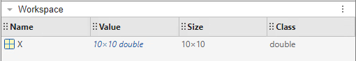
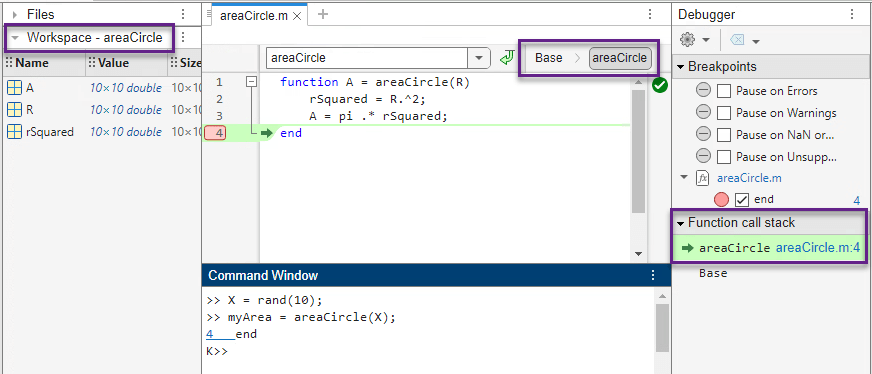
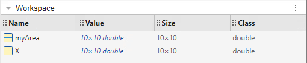

Base and Function Workspaces
When you first start working in MATLAB®, you usually interact with the base workspace. When you define your own functions or classes and analyze your code using the Debugger, you are likely to interact with function workspaces. This topic describes the differences between the workspaces and how to identify which workspace is currently active.
What Is the Base Workspace?
The base workspace typically contains variables that you create by running code at
the command line and in scripts. For instance, assigning a value to
X at the command line creates or updates X
in the base workspace.
X = rand(10);

Variables in the base workspace exist in memory until you clear them or end your MATLAB session.
Function Workspaces
Code within functions does not use the base workspace. Every function has its own function workspace. Each function workspace is separate from the base workspace and all other workspaces to protect the integrity of the data. Even local functions in a common file have their own workspaces. A variable created inside a function belongs to the workspace of that function and is available only inside that function.
For instance, suppose you define a function in a file. In this example, the
areaCircle function accepts an input named
R, creates a local variable rSquared, and
then returns an output named A.
Setting a breakpoint in the Editor pauses execution when you call the function, allowing you to interact with the function workspace. While debugging, you can switch between the workspaces in the current stack, including the base workspace, using the options in the Editor and the Debugger.

When areaCircle ends execution, the base workspace contains
myArea and X. The A,
R, and rSquared variables, which were
local to areaCircle, are not in the base workspace.

Scripts do not have their own workspaces. When you call a script from a function, the script uses the function workspace. Otherwise, the script uses the base workspace.
Nested Functions
Like local functions, nested functions have their own workspaces. However, there are two significant differences:
Variables in the parent function workspace are also available in nested functions.
All variables in nested functions and their parent functions must be explicitly defined. That is, you cannot call a function or script that assigns values to variables unless those variables already exist in the function workspace.
For more details, see Nested Functions.